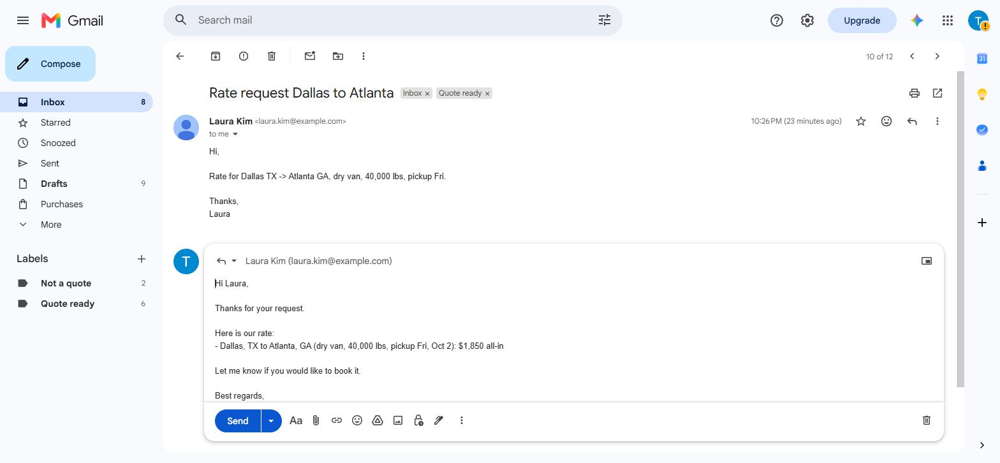
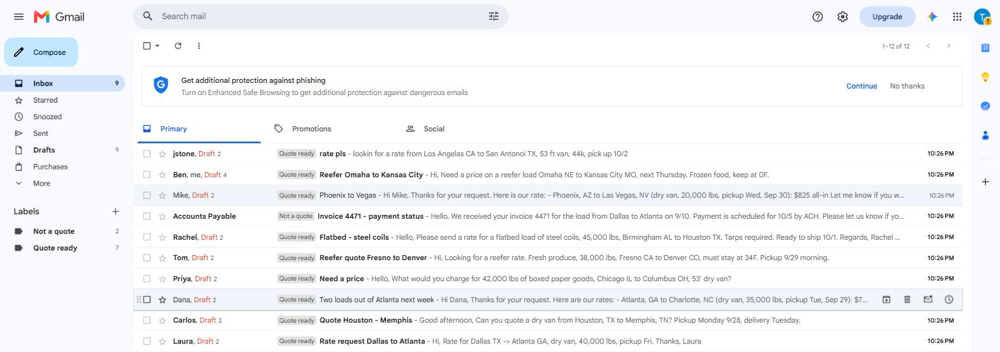

Every rate request in your inbox gets a draft reply before you open it
A small tool inside your Gmail. It reads each rate request, checks your own past rates on that lane, and leaves a ready draft in the same thread. You check it and press Send. Nothing goes out on its own.
Email me to set it up dkautomation.lab@gmail.com
What it does
- Picks up new rate requests: lane, equipment, weight, pickup date, even when they are only in the subject line or have typos in city names.
- Looks up your last rate on that lane in your own rate history sheet. No history? The draft says so instead of guessing a number.
- Handles several lanes in one email and skips emails that are not rate requests, such as invoices.
- Marks each thread Quote ready so you see at a glance what is waiting.

How setup works
- You open a link, click Make a copy of a Google Sheet, then Allow. About five minutes.
- You share that sheet with me. I load your rate history and tune the replies to how you write.
- We test it on ten of your real requests. It is done when the drafts are right.
Everything happens by email. No calls, no software to install. Works with Gmail and Google Workspace.
What it does not do
- It never sends an email. A person always opens the draft, checks it and presses Send.
- It does not set your prices. Rates come from your own history; you decide what goes out.
- Email text is processed by an AI model (Anthropic's API, not used for model training) and is not stored by me.
Want it on your inbox?
Write to dkautomation.lab@gmail.com with one line about how you receive rate requests today. Agencies and consultants who want to offer it to their clients are welcome too.
The code is public: github.com/dkautomation23/freight-quote-drafts.